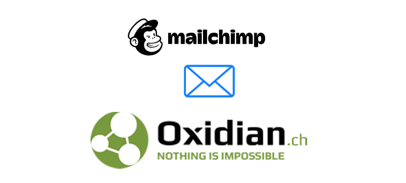

Novosti

Važnost SSL Certifikata za vašu web stranicu ili web shop
Kao vlasnik web stranice, zasigurno ste se pitali što možete učiniti kako bi vaša web stranica bila sigurna za vas i vaše klijente. U ovom…Više

Mailchimp: savršena platforma za email marketing
Počeli smo koristiti Mailchimp kao našu marketinšku platformu za e-mail kampanje, prije godinu dana. Iako to nije tako dugo, možemo reći da u prvih 8… Više
Payment Gateway : što je i čemu služi?
Što je payment gateway? Payment Gateway je softver koji omogućuje plaćanje na online trgovinama kao i maloprodaji te ima važnu ulogu u procesu transakcije. Štiti… Više